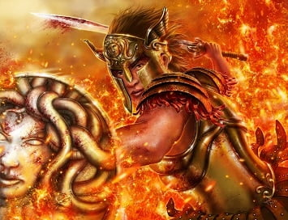

MITOLOGY CITY |
| INICIO |
HISTORIA |
PANTEON | SEMIDIOSES |
GIGANTES |
MITOLOGY
CITY
|
GUERRAS |
DIOSES |
TITANES |
MITOS POPULARES |
MOUNSTROS |
Hercules recibió 12 trabajos para ser
purificado de sus pecados y con ellos le otorgarían la inmortalidad.
1.Mata al león de Nemea
2.Mata a la Hidra de Lerna
3.Capturar la cierva de cerinea:
4.Capturen al Jabalí Erimanto
5.Limpiar los establos de Augías en un sólo
día
6.Mata
a los pájaros de
Estínfalo
7.Capturar al Toro de
Creta
8.Robar las Yeguas de Diomedes
9.Robar el cinturón de Hipólita, Reina de
las Amazonas
10.Robar el ganado del monstruo Gerión
11.Coger las manzanas de las Hespérides
12.Capturar a Cerbero y sacarlo de los infiernos

PERCEOLa Gorgona Medusa, junto con sus
hermanas Sthenno y Euríale, se dice que vive en los confines de la Tierra más
allá de los océanos. Perseo era capaz de volar a su guarida gracias a su vuelo
sandalias que ahora tenía.
Usando la tapa de Hades para
representar lo invisible, él fue capaz de encontrar y en silencio matar a
Medusa con la hoz que él recibió de Hermes. Además de matar a Medusa, este
evento se dijo que el nacimiento de eventos de Pegasus, el mitológico caballo
alado, y su hermano de Crisaor, que se dice que han surgido desde el cuello
cortado de Medusa.
Después de matar a Medusa, la otra Gorgon hermanas fueron alertados y trató de someter a Perseo. Sin embargo, el Dios de Athena asistida Perseo con la huida y fue capaz de escapar con la cabeza de Medusa en el kibisis.

Datos breves sobre Teseo
– Semigod (semidiós) con dos padres,
incluido el dios del mar Poseidon
– Derrotó al Minotauro
– Rey de Atenas acreditado con el
desarrollo de la democracia
– Perdió su trono después de la
muerte de su esposa e hijo
– El Mar Egeo lleva el nombre de su
padre humano
– Representado con frecuencia en el
arte antiguo y romántico
– Experimentó seis tareas en su
viaje a Atenas
– Algunos creyeron que se basó en un pariente histórico

En la mitología griega, Odiseo es el
bisnieto de Hermes, uno de los doce Dioses del Olimpo. Él es el hijo de
Laertes, rey de Ítaca, y Anticlea, y el esposo de Penélope y padre de un niño
llamado Telémaco.
Conocido por sus habilidades de
liderazgo, el ingenio y la inteligencia, Odiseo es el más famoso por sus diez
años de viaje tuvimos después de la Guerra de Troya. Es durante este tiempo que
él estuvo involucrado en una serie de aventuras y se enfrentó a muchos
obstáculos como él luchó para volver a su hogar con su esposa y su hijo.
Odiseo nació en la isla de Itaca.
Durante su niñez, él muestra impresionantes habilidades atléticas. Él disfrutó
de tiro con arco y lo hizo muy bien en ella. Jóvenes de Odiseo, también le
gustaba la caza con su perro Argos, a menudo va junto con él. Él no es un dios,
pero él tiene una conexión con los dioses por su lado materno de la familia.